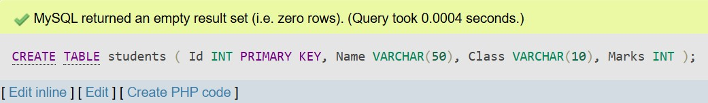
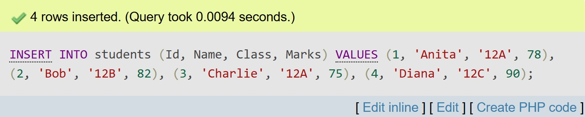
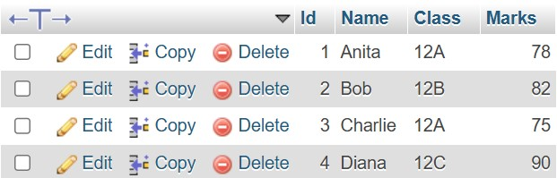
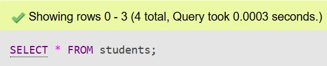
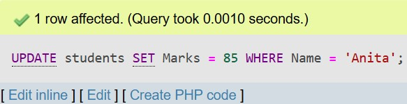
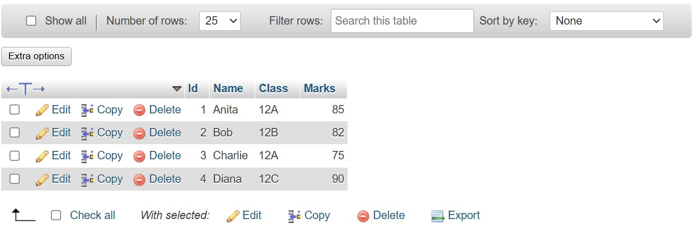
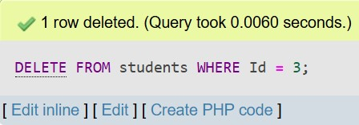
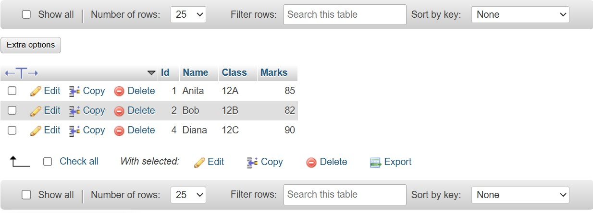

Data
Data consists of raw facts, figures, and symbols that are collected from various sources but have not yet been processed or interpreted. It can exist in many forms, such as numbers, text, images, audio, or video. Data on its own does not carry any meaning until it is analyzed or put into context. For example, a list of numbers like “105, 210, 350” is data—it does not tell us anything unless we know what those numbers represent.
Information
Information is data that has been processed, organized, and structured in a way that adds meaning and context. It is data made useful and understandable for specific purposes, such as decision-making, problem-solving, or analysis. When we collect data and arrange it logically—like putting customer purchase records into a table, calculating totals, and visualizing trends—it becomes information.
Features of Information
- Accuracy: Accurate information is free from errors and reflects the true state of facts. It helps in making reliable decisions.
- Timeliness: Information must be available when it is needed. Outdated information can lead to incorrect decisions or missed opportunities.
- Completeness: Complete information includes all the necessary data required to understand a situation fully and make informed decisions.
- Relevance: Information must be directly related to the purpose or issue at hand. Irrelevant data, even if accurate, does not help.
- Consistency: Information should be uniform and match other related data, ensuring there are no contradictions or discrepancies.
Database and Its Purpose
A database is a structured and organized collection of related data stored in a computer system. It allows data to be stored electronically in a way that it can be easily accessed, updated, and managed. The main purpose of a database is to store large volumes of data efficiently while minimizing redundancy and maximizing data integrity. Modern databases support multi-user environments, meaning many users can access and manipulate data simultaneously without conflict. Databases are essential for various applications—from online banking and inventory systems to e-commerce websites and healthcare systems.
Terminologies in Database
- Table: A database object that holds data in a grid of rows and columns, where each table represents an entity such as customers, products, or orders.
- Field: A column in a table that defines a specific type of data, such as a customer’s name, ID number, or phone number.
- Record: A row in a table that represents one instance of the entity. For example, one customer's data forms one record.
- Tuple: A synonym for a record; it refers to a single row in a relational database table.
- Object: In object-oriented databases, an object is a self-contained unit that includes both data (attributes) and the methods (functions) that operate on the data.
- Keys: Keys are special fields used to uniquely identify records or create relationships between tables. A Primary Key uniquely identifies each record in a table, while a Foreign Key links one table to another.
Data Dictionary
A data dictionary is a central source of information about the data in a database. It stores metadata—data about the actual data—such as the names of tables, the structure of fields, data types, field lengths, constraints, and relationships among tables. It acts like a reference guide for database developers, administrators, and users by ensuring everyone understands the structure and rules of the data. By maintaining consistency and documentation, a data dictionary helps prevent errors during database design, development, and maintenance. It is often built-in and maintained by the DBMS software itself.
Database Management System (DBMS)
Introduction
A Database Management System (DBMS) is a software application that enables users to interact with a database to store, retrieve, manipulate, and manage data efficiently. It acts as a bridge between the user and the data stored in the database. With a DBMS, users can perform various operations such as inserting new data, updating existing records, deleting unnecessary data, and running queries to generate reports. It hides the complexities of how data is physically stored and allows users to focus on logical operations. Examples of DBMS software include MySQL, Oracle, PostgreSQL, and Microsoft SQL Server.
Objectives
- To provide efficient storage, access, and retrieval of data while ensuring high performance.
- To ensure data integrity, meaning the data remains accurate and consistent over time.
- To eliminate redundancy (repeated data) and inconsistency (conflicting versions of data).
- To support concurrent access by multiple users without data conflicts or loss.
- To provide backup and recovery solutions that protect data in case of failure or disaster.
Advantages
- Data Integrity: A DBMS uses rules and constraints to ensure that the data entered into the database is valid and consistent.
- Security: Access controls and authentication features protect sensitive data from unauthorized users.
- Reduced Redundancy: Data is stored in one place and shared across multiple applications, avoiding duplication.
- Efficient Data Access: Users can retrieve specific data quickly using structured query language (SQL).
- Backup and Recovery: Automatic tools and processes help recover lost data and restore databases in case of errors or system failures.
Disadvantages
- Cost: Setting up a DBMS requires significant investment in software, hardware, and skilled personnel. Licensing, maintenance, and infrastructure costs can be high, especially for large enterprises.
- Complexity: Operating and managing a DBMS requires technical expertise. Tasks like database design, query optimization, backup, and recovery demand skilled administrators and developers.
- Performance: In very large databases, especially those with complex queries or many concurrent users, the overhead of managing data security, integrity, and transactions can slow down performance unless the system is well-optimized.
Types of Database Model
- Hierarchical Model: Organizes data in a tree-like structure where each record has a single parent, and possibly many children. This model is efficient for representing simple one-to-many relationships but becomes difficult to manage when relationships grow more complex.
- Network Model: More flexible than the hierarchical model, this model allows each record to have multiple parent and child records. It represents complex many-to-many relationships using a graph structure, though it is harder to design and maintain.
- Relational Model: Stores data in two-dimensional tables with rows and columns. It is the most widely used model due to its simplicity, flexibility, and support for powerful query languages like SQL. Each table can be related to others using keys, making data manipulation efficient.
- Entity-Relational (ER) Model: Used mainly in database design, the ER model visualizes data as entities (objects), attributes (characteristics), and relationships between them. It helps in understanding data requirements before the actual database is built.
Integrity Constraints and Types
- Domain Constraint: Limits the possible values that an attribute can take. For example, a field "Age" might be restricted to numeric values between 0 and 120, ensuring data validity.
- Entity Integrity: Ensures that each table has a unique and non-null primary key so that every record can be uniquely identified. Without this, data retrieval and relationship formation become unreliable.
- Referential Integrity: Maintains consistency among relationships. It ensures that a foreign key value always refers to an existing, valid record in the related table. If not maintained, it could lead to orphaned records or broken links.
Keys
- Primary Key: A unique identifier for each record in a table. No two records can have the same primary key, and it cannot contain null values. It plays a central role in maintaining entity integrity.
- Foreign Key: An attribute in one table that links to the primary key of another table. It establishes relationships between tables and maintains referential integrity.
- Candidate Key: A field, or combination of fields, that can uniquely identify a record. A table may have multiple candidate keys, but only one is selected as the primary key.
Normalization
Introduction
Normalization is a structured process used in database design to minimize data redundancy and ensure logical data storage. It involves dividing large tables into smaller ones and establishing relationships between them. The process follows a series of rules known as Normal Forms. The main goals of normalization are to make data more consistent, reduce duplication, and improve data integrity.
Normal Forms
- 1NF (First Normal Form): Ensures that each field in a table contains only atomic values (no multiple values or lists) and that each record is unique. It eliminates repeating groups and arrays from the data.
- 2NF (Second Normal Form): Builds upon 1NF by removing partial dependencies, meaning that all non-key attributes must depend on the entire primary key, not just part of it. This usually applies to tables with composite keys.
- 3NF (Third Normal Form): Takes normalization further by eliminating transitive dependencies. A table is in 3NF if it is in 2NF and all non-key attributes are dependent only on the primary key—not on other non-key attributes.
Advantages
- Reduces data redundancy and prevents data anomalies during insert, update, or delete operations.
- Improves data accuracy and integrity by ensuring logical data structure and relationships.
- Supports easier maintenance and updates, as changes need to be made in fewer places.
Disadvantages
- Over-normalization may lead to too many tables, requiring complex joins that can slow down data retrieval.
- Users may find it harder to write queries or understand the data model due to its fragmented structure.
Centralized and Distributed Database
Introduction
A centralized database stores all data in a single location, typically a central server, which can be accessed by users over a network. In contrast, a distributed database stores data across multiple physical locations—either different computers in the same area or across geographic regions. These separate locations are connected by a network and work together as if they were a single database. Each model has its own strengths and challenges depending on the scale and nature of use.
Advantages
- Centralized Database: Central control over data ensures consistency and simplifies security and management. Backup and recovery processes are easier to handle due to having a single system.
- Distributed Database: Provides better fault tolerance and improved reliability, as failure in one location doesn't affect the entire system. It also offers faster access for local users and greater scalability as the system grows.
Disadvantages
- Centralized Database: If the central server fails, the entire system becomes inaccessible. Performance may also degrade with increased load or if users are geographically distant from the central location.
- Distributed Database: Requires more complex system design and management. Issues like data synchronization, network reliability, and security become more challenging across multiple locations.
Comparison
| Feature | Centralized Database | Distributed Database |
|---|---|---|
| Location | All data is stored in a single, centralized location such as a main server or data center. | Data is spread across multiple physical locations or servers interconnected through a network. |
| Data Access Speed | Faster within the local area or organization due to close proximity to the central server. | Speed depends on network bandwidth, latency, and connectivity across different locations. |
| Failure Risk | High risk due to a single point of failure. If the central system fails, all data access is lost. | Low risk as data redundancy allows continued operation even if one site goes down. |
| Management | Easier to manage and control due to centralized policies and configuration. | Requires complex coordination between sites, with challenges in synchronization and consistency. |
Database Security
Introduction
Database security involves the implementation of policies, procedures, and tools that safeguard the database from cyber threats, internal misuse, unauthorized access, and data breaches. It ensures that sensitive data remains protected and that only authorized users can access or modify the database.
Challenges
- Preventing unauthorized access to confidential or sensitive information by implementing strict access controls.
- Mitigating threats such as SQL injection, malware, and phishing attacks which exploit vulnerabilities in poorly secured systems.
- Ensuring compliance with data protection regulations like GDPR, HIPAA, or CCPA, which mandate secure handling and privacy of personal data.
Security Measures
- Authentication: The process of verifying the identity of users through usernames, passwords, biometric scans, or multi-factor authentication before granting database access.
- Authorization: Defines and controls what actions an authenticated user can perform, based on roles and permissions assigned by the system administrator.
- Encryption: Converts data into an unreadable format using cryptographic algorithms, making it useless to unauthorized users even if intercepted.
- Audit Trails: Logs and tracks all activities and changes in the database, allowing detection of unusual or unauthorized behavior for security and compliance audits.
- Backup & Recovery: Ensures that database copies are regularly saved and can be restored after data loss, corruption, or cyberattacks to maintain business continuity.
Roles of DBA (Database Administrator)
- Installation and Configuration: Sets up the database software, defines the structure, and ensures the system is ready for use.
- Performance Monitoring: Continuously tracks and improves query response time, storage usage, and system efficiency.
- Security Management: Implements access controls, roles, and permissions to secure the data and system.
- Data Backup and Recovery: Plans and executes data backup strategies to prevent data loss, and restores data when necessary.
- Data Integrity Enforcement: Ensures the data remains accurate, consistent, and reliable through the use of constraints and validation rules.
Practical Topics
DDL and DML Languages
SQL is divided into several language components, among which DDL and DML are the most commonly used for managing structure and data respectively.
DDL (Data Definition Language): DDL commands are used to define or alter the structure of database objects like tables, indexes, and schemas.
- CREATE: Used to create new tables, databases, views, indexes, or other database objects.
- ALTER: Allows modification of existing structures, such as adding or removing columns from a table.
- DROP: Permanently deletes database objects, removing their definitions and data.
DML (Data Manipulation Language): DML commands deal with data manipulation. They allow users to insert, update, delete, or retrieve data from database tables.
- INSERT: Adds one or more new records into a table.
- UPDATE: Modifies existing data in one or more records of a table.
- DELETE: Removes one or more records from a table.
- SELECT: Retrieves specific data based on user-defined criteria. It is the most commonly used SQL command.
1. Data Constraints
Constraints are rules enforced on data columns to maintain data accuracy and integrity. They help ensure that only valid data is stored in the database.
- NOT NULL: Ensures that a column cannot store NULL values. It's useful when a field must always have a value.
name VARCHAR(50) NOT NULL; - UNIQUE: Ensures that all values in a column are different. This is commonly used for fields like email or username.
email VARCHAR(100) UNIQUE; - PRIMARY KEY: Uniquely identifies each record in a table. It is a combination of NOT NULL and UNIQUE.
id INT PRIMARY KEY; - AUTO INCREMENT: Automatically increases the value of a numeric column whenever a new row is inserted. Often used with PRIMARY KEY.
id INT PRIMARY KEY AUTO_INCREMENT;
2. Operators (AND, OR, NOT)
Logical operators are used to combine multiple conditions in the WHERE clause of a query.
- AND: Returns true if both conditions are true.
SELECT * FROM students WHERE grade = 'A' AND age < 18; - OR: Returns true if at least one condition is true.
SELECT * FROM students WHERE city = 'Kathmandu' OR city = 'Lalitpur'; - NOT: Reverses the result of a condition.
SELECT * FROM students WHERE NOT grade = 'F';
3. WHERE Clause
The WHERE clause is used to filter records based on specified conditions.
It is commonly used in SELECT, UPDATE, DELETE, and other queries.
Example:
SELECT * FROM employees WHERE salary > 50000;
4. ORDER BY
The ORDER BY clause is used to sort the result set in either ascending (ASC) or descending (DESC) order. By default, the sorting is in ascending order.
Example:
SELECT * FROM students ORDER BY marks DESC;
5. SQL JOINs
JOIN operations in SQL are used to combine rows from two or more tables based on a related column between them. There are different types of joins, each used for different scenarios.
| JOIN Type | Description | Example |
|---|---|---|
| INNER JOIN | Returns only the rows where there is a match in both tables. | SELECT * FROM A INNER JOIN B ON A.id = B.id; |
| LEFT JOIN | Returns all rows from the left table and the matched rows from the right table. If no match, NULLs are returned for right table. | SELECT * FROM A LEFT JOIN B ON A.id = B.id; |
| RIGHT JOIN | Returns all rows from the right table and the matched rows from the left table. If no match, NULLs are returned for left table. | SELECT * FROM A RIGHT JOIN B ON A.id = B.id; |
| FULL JOIN | Returns all rows when there is a match in either table. Non-matching rows will have NULLs for the missing side. | SELECT * FROM A FULL JOIN B ON A.id = B.id; |
SQL Data Types
SQL provides a wide range of data types that define the type and size of data that can be stored in a column. Choosing appropriate data types improves data integrity and optimizes storage.
- CHAR(n): Fixed-length character string. Stores exactly n characters. If data is shorter, it pads with spaces. Useful for storing codes or fixed-size fields.
- VARCHAR(n): Variable-length character string. Stores up to n characters without padding. Saves storage space for varying length data like names.
- BINARY(n): Fixed-length binary data, stores exactly n bytes. Used for raw byte data.
- VARBINARY(n): Variable-length binary data. Stores up to n bytes without padding.
- TINYBLOB: Binary Large Object that can store up to 255 bytes of binary data, such as images or multimedia.
- TINYTEXT: Text data up to 255 characters.
- TEXT: Larger text field up to 65,535 characters, suitable for descriptions or large notes.
- LONGTEXT: Very large text data, can store up to 4GB of text.
- ENUM: Enumeration, allows a column to have one value chosen from a predefined list of strings.
- BIT: Stores bit-field values (0 or 1), used for boolean flags or binary indicators.
- TINYINT: Small integer, usually 1 byte (-128 to 127 or 0 to 255 unsigned).
- Boolean: Represents a true or false value, often stored internally as 1 (true) or 0 (false), used for binary choices or flags.
- Integer: Stores whole numbers without decimals, suitable for counts, IDs, or any numeric value that doesn’t require fractions.
- Float: Stores approximate decimal numbers using floating-point format; good for scientific data where some rounding errors are acceptable.
- Double: Similar to FLOAT but with double the precision and size, allowing more accurate storage of large or very precise decimal numbers.
- Decimal: Stores exact fixed-point decimal numbers with a specified total number of digits and digits after the decimal point, perfect for financial and monetary values requiring precision.
- Date: Stores calendar dates without any time component, typically in a format like YYYY-MM-DD.
- Datetime: Stores both date and time values together, usually formatted as YYYY-MM-DD HH:MM:SS, useful for timestamps or event tracking.
- One-to-One (1:1): One instance of entity A relates to only one instance of entity B.
- One-to-Many (1:N): One instance of entity A relates to many instances of entity B.
- Many-to-Many (M:N): Many instances of entity A relate to many instances of entity B.
- Rectangle — Entity
- Oval — Attribute
- Diamond — Relationship
- Double Oval — Multivalued Attribute
- Double Rectangle — Weak Entity (dependent on another entity)
- Dashed Oval — Derived Attribute (calculated from other attributes)
- Lines
- Cardinality Indicators
- Reduces data redundancy and maintains data consistency.
- Enhances data security by controlling access permissions.
- Supports multiple users accessing data simultaneously.
- Provides backup and recovery options to protect data.
- Can be expensive to implement and maintain.
- Complex to design and requires skilled administrators.
- Performance may degrade if not properly optimized.
- Advantages:
- Efficient for one-to-many relationships.
- Faster data retrieval for structured data.
- Easy to understand for simple hierarchies.
- Disadvantages:
- Lacks flexibility for complex relationships (many-to-many).
- Data redundancy if an entity needs multiple parents.
- Reorganization is difficult when structure changes.
- Advantages:
- Supports many-to-many relationships directly.
- Faster access in complex data relationships.
- More flexible than the hierarchical model.
- Disadvantages:
- Complex to design and manage due to pointers.
- Requires understanding of network structure for queries.
- Maintenance and updates are difficult.
- Advantages:
- Simple and intuitive data representation.
- Supports powerful query languages like SQL.
- Data is independent from application structure.
- Disadvantages:
- Slower performance on very large or complex datasets with many joins.
- May require normalization which leads to more tables.
- Need for optimized indexing and tuning for efficiency.
- Advantages:
- Provides a clear and visual understanding of data structure.
- Helps in planning before physical database creation.
- Improves communication between users and developers.
- Disadvantages:
- Does not store actual data; only used in design phase.
- Complex ER diagrams can be hard to interpret in large systems.
- Not supported as a model in DBMS engines directly.
- Hierarchical Model: Organizes data in a tree-like structure using parent-child relationships. Difficult to represent many-to-many relationships. Not flexible for dynamic requirements.
- Network Model: Uses graph structures with multiple parent-child links (many-to-many). Complex navigation using pointers. Harder to query than relational.
- Object-Oriented Model: Integrates object-oriented programming concepts like inheritance and encapsulation. Suitable for multimedia, CAD, and AI systems but lacks standardization.
- Increased storage usage
- Data inconsistency and integrity issues
- Difficulty in data maintenance
- Complicated update operations and risk of anomalies
- Normalization: Splits large unorganized tables into smaller related tables based on functional dependencies.
- Centralized Storage: Stores common data once and references it using keys.
- Relationships: Uses foreign keys to link related tables rather than copying the same data across tables.
- Database Installation and Configuration: Installing the DBMS software and configuring it according to the specific needs of the organization, ensuring optimal setup for performance and security.
- Backup and Recovery: Developing and implementing reliable backup strategies to safeguard data. In case of system failures, disasters, or accidental deletions, the DBA ensures data can be restored quickly and accurately to minimize downtime.
- Security Management: Establishing strong access controls, managing user privileges, and protecting the database from unauthorized access, hacking attempts, or internal misuse, thus maintaining data confidentiality and integrity.
- Performance Monitoring and Tuning: Continuously monitoring database performance to detect slow queries, resource bottlenecks, or inefficient operations, and tuning the system to improve speed and responsiveness.
- User Account Management: Managing database users by creating and maintaining user accounts, assigning appropriate roles, enforcing password policies, and controlling access levels based on user responsibilities.
- Data Modeling and Schema Design: Working closely with developers and analysts to design and optimize database schemas, ensuring data is structured efficiently to support application needs and maintain data integrity.
- Eliminates redundant data
- Improves consistency and data integrity
- Makes updates and deletions more efficient
- Primary Key: A primary key is a unique identifier for each record in a database table. It ensures that no two rows have the same value in this column, and it cannot contain null values. This key is essential for maintaining the integrity of the data and allows efficient searching and referencing of records.
- Foreign Key: A foreign key is a column or set of columns in one table that refers to the primary key in another table. It establishes a link between the two tables and enforces referential integrity, ensuring that the relationship between records remains consistent and valid across the database.
- Candidate Key: Candidate keys are columns or combinations of columns that can uniquely identify rows in a table. From the set of candidate keys, one is chosen as the primary key, while the others remain as alternate unique keys. Candidate keys must have unique values and cannot contain nulls.
- Student_ID: Primary Key — Uniquely identifies each student. No duplicates or nulls allowed.
- Email: Candidate Key — Could uniquely identify a student as well, but not chosen as primary key.
- PhoneNumber: Candidate Key — Also can uniquely identify a student.
- Department_ID: Foreign Key — Links to the primary key of the Department table to show which department the student belongs to.
- Name: Not a key, just a regular attribute.
- DDL (Data Definition Language): This component defines and modifies database structures such as tables, indexes, and schemas. It controls the metadata of the database.
Examples:CREATE(to create tables or databases),ALTER(to modify existing database objects),DROP(to delete tables or databases). - DML (Data Manipulation Language): Used for managing data stored in the database tables. It includes operations that allow insertion, updating, deletion, and retrieval of data.
Examples:INSERT,UPDATE,DELETE, andSELECT. - DCL (Data Control Language): Governs the access permissions and security levels of the database, ensuring only authorized users can perform specific actions.
Examples:GRANT(to give privileges),REVOKE(to remove privileges). COUNT()– Returns the total number of rows that match a query condition, useful for aggregations.SUM()– Calculates the total sum of values in a numeric column.AVG()– Computes the average value of a numeric column.MAX(),MIN()– Identify the highest and lowest values in a column, respectively.GROUP BY,ORDER BY,HAVING– Facilitate grouping of records, sorting results, and filtering grouped data for advanced queries.- Data Dictionary: A data dictionary is a centralized repository that stores metadata about the database structure, such as tables, columns, and data types. It helps users and developers understand the design and rules of the database. This information ensures consistency and easier management of the database system.
- Primary Key: A primary key uniquely identifies each record in a table and ensures that no two rows share the same value in this field. It is essential for maintaining entity integrity and enabling efficient indexing. Primary keys are used to link records across related tables.
- Relationship: Relationships define how tables in a database are logically connected, usually through keys like foreign keys. They enable data from multiple tables to be combined and queried efficiently. Maintaining these relationships helps enforce data consistency and referential integrity.
- DML (Data Manipulation Language): DML includes commands that allow users to insert, update, delete, and retrieve data within database tables. These operations are crucial for managing and modifying the actual data stored in the database. DML commands form the backbone of day-to-day database usage.
- SQL (Structured Query Language): SQL is the standard language used to communicate with relational databases. It allows users to perform queries, manage database structures, and control access to data. SQL is powerful yet declarative, letting users specify what data they want without detailing how to get it.
- Data Integrity: Data integrity ensures that data remains accurate, consistent, and trustworthy throughout its lifecycle. Databases enforce integrity through constraints and rules to prevent errors like duplication or invalid entries. This leads to reliable data for reporting and decision-making.
- DDL (Data Definition Language): DDL consists of commands that define and modify the structure of database objects like tables and indexes. It is responsible for creating, altering, or deleting database schemas. DDL shapes the physical framework that holds the data.
- Data Security: Data security protects sensitive information from unauthorized access, breaches, and corruption. It involves methods like authentication, encryption, and access control to maintain confidentiality and integrity. Effective security is vital for compliance and user trust.
- Database System: A database system combines the actual data storage, the DBMS software, and related tools that help manage data. It provides an environment where data can be efficiently stored, retrieved, and maintained. Together, these components support complex data operations and user interactions.
ER Diagrams (Entity-Relationship Diagrams)
ER Diagrams are a visual representation of the database structure. They help in designing databases by illustrating the entities, their attributes, and the relationships between them. This modeling technique is widely used in database design to capture the data requirements clearly.
1. Entity
An Entity represents a real-world object or concept that can have data stored about it. Examples include a student, employee, product, or course. Each entity is represented by a rectangle in the ER diagram.
2. Attributes
Attributes are the properties or details that describe an entity. For example, a student entity may have attributes such as StudentID, Name, Age, and Email. Attributes are depicted by ovals connected to their respective entity rectangles.
3. Relationships
Relationships show how two or more entities are related to each other. For example, a student enrolls in a course. Relationships are represented by diamonds connected to the entities involved.
4. Cardinality and Degree
Cardinality defines the number of instances of one entity that can be associated with instances of another entity. Common cardinalities include:
Degree refers to the number of entities involved in a relationship. Most relationships are binary (degree 2), involving two entities.
5. Symbols and Their Meanings
Example:
Student, Course
Example:
StudentID, Name
Example:
Enrolled, Teaches
Example:
Phone Numbers
Example:
Dependent
Example:
Age (from DOB)
Example:
1, N, M
Past Questions and Model Questions (2020–2024)
1. What is Database and DBMS? List out the advantages and disadvantages of DBMS.
A database is a collection of logically related data organized for efficient access, management, and updating. A Database Management System (DBMS) is software that helps users store, retrieve, modify, and delete data in a structured way.
Advantages:
Disadvantages:
2. Differentiate between file processing system and DBMS. Give at least four points.
File processing system and DBMS can be differentiated on the following basis :
| Basis of Comparison | File Processing System | Database Management System (DBMS) |
|---|---|---|
| Data Redundancy | Data may be duplicated across multiple files, leading to redundancy and inconsistency. | Redundancy is minimized through normalization and centralized control of data. |
| Data Sharing | Difficult to share data across different applications or users; files are isolated. | Multiple users and applications can access and share data concurrently in a controlled way. |
| Security | Lacks proper security mechanisms; access control is basic or nonexistent. | Provides authentication and authorization for better data protection and privacy. |
| Data Integrity | Difficult to maintain accuracy and consistency due to repeated and scattered data. | Ensures integrity through constraints like primary keys, foreign keys, and validation rules. |
| Data Access | Access is program-specific and requires manual file handling. | SQL queries allow easy and efficient access to data without knowing internal storage. |
3. Explain the different models of DBMS with advantages and disadvantages.
A. Hierarchical Model
This model organizes data in a tree-like structure where each child record has only one parent. Data is stored in a hierarchy of parent-child relationships using links. For example, a company might have a single department with multiple employees under it.
B. Network Model
The network model uses a graph structure where each record can have multiple parent and child records. It is designed to handle many-to-many relationships efficiently. This model uses pointers to relate different records and allows more complex connections than the hierarchical model.
C. Relational Model
In the relational model, data is organized in tables (also called relations) with rows and columns. Each table has a unique primary key, and tables can be linked using foreign keys. SQL is used to interact with the data, making this model the most popular in modern systems.
D. Entity-Relationship (ER) Model
The ER model is used in the design phase of a database. It visually represents entities (real-world objects), their attributes (properties), and the relationships between them. It is a blueprint used to design relational databases before implementation.
4. What is a relational database? How is it different from other database models?
A relational database is a type of database that stores and organizes data into one or more tables (also called relations), where each table consists of rows and columns. Each row, known as a record or tuple, represents a unique entry, while each column represents an attribute or field of the data. The relational model is based on the principles of set theory and relational algebra introduced by Dr. E.F. Codd in 1970.
In a relational database, tables can be linked using keys. The primary key uniquely identifies each record, and the foreign key establishes relationships between tables. This structure makes it easier to maintain, query, and manipulate data efficiently.
Differences from Other Models:
Advantages of Relational Model: Data integrity, easier querying using SQL, normalization support, easy maintenance, and strong theoretical foundation.
Examples of Relational DBMS: MySQL, PostgreSQL, Oracle, SQLite, Microsoft SQL Server
5. What is data redundancy? How does DBMS help in reducing it?
Data redundancy refers to the unnecessary duplication of data within a database. For instance, storing a customer's address repeatedly in multiple tables increases the risk of inconsistencies if one record is updated while others remain unchanged.
Problems caused by redundancy:
How DBMS Reduces Redundancy:
Example: Instead of storing department names in every employee record, we store them in a separate 'Departments' table and link it using Department_ID.
6. Differentiate between centralized and distributed database systems.
Centralized Database: In this setup, all the data is located and managed from a single central server. Users access the data remotely over a network. These systems are easier to control and manage, but pose risks like single point failure and performance bottlenecks during high traffic.
Distributed Database: Data is stored across multiple physical locations (nodes) connected via a network. Though complex to manage, it offers fault tolerance, parallel processing, and faster local access.
| Aspect | Centralized Database | Distributed Database |
|---|---|---|
| Data Storage | Data is stored at a single central location, simplifying management and control. | Data is stored across multiple locations connected via a network, allowing local data management. |
| Reliability | Lower reliability due to a single point of failure; if the central server fails, access is lost. | Higher reliability as data redundancy allows continued operation despite failures in some locations. |
| Cost | Generally lower setup and maintenance costs with a single server to maintain. | Higher costs due to multiple servers, network infrastructure, and complex administration. |
| Performance | Performance may degrade for remote users due to network latency accessing the central server. | Better local performance as users access nearby servers, reducing latency and network load. |
| Management | Easier to manage with centralized control and uniform security policies. | More complex management due to synchronization, consistency, and distributed security challenges. |
Example: Bank systems use distributed databases across branches, while small businesses may use centralized systems.
7. Who is Database Administrator (DBA)? What are the major responsibilities of DBA?
A Database Administrator (DBA) is a specialized IT professional who manages, maintains, and secures database systems. The role of a DBA is crucial for the smooth functioning, availability, and integrity of the organization's data assets.
Responsibilities of a DBA:
Example: In a university, a DBA may control access to student data, ensure regular backups, and support the ERP software used by faculties and administration.
8. Define normalization. Explain 1NF, 2NF and 3NF with suitable examples.
Normalization is the process of organizing data in a database to reduce redundancy and improve data integrity. It involves dividing large, complex tables into smaller related tables and defining relationships among them. This makes the database easier to maintain and less prone to anomalies.
First Normal Form (1NF): Ensures that all attributes contain atomic values (no repeating groups).
Example: Instead of storing multiple subjects in one column like "Math, English", create separate rows for each subject.
Second Normal Form (2NF): Achieved when a table is in 1NF and all non-key attributes are fully functionally dependent on the entire primary key. It eliminates partial dependency.
Example: In a table with StudentID and Subject as composite keys, storing student name (dependent only on StudentID) violates 2NF.
Third Normal Form (3NF): Ensures that all fields are only dependent on the primary key and not on any other non-key field (no transitive dependency).
Example: If StudentID → DeptID and DeptID → DeptName, then DeptName should be moved to a new table.
Benefits of Normalization:
9. Explain the terms: primary key, foreign key, and candidate key with examples.
Examples:
| Student_ID | Name | PhoneNumber | Department_ID | |
|---|---|---|---|---|
| S101 | Alice | alice@mail.com | 9876543210 | D01 |
| S102 | Bob | bob@mail.com | 9812345678 | D02 |
| S103 | Charlie | charlie@mail.com | 9823456789 | D01 |
Explanation of keys:
10. What is SQL? Explain its components and common functions.
SQL (Structured Query Language) is a powerful, standardized language designed to manage and manipulate data within relational database management systems. It allows users to store, retrieve, modify, and control data efficiently by specifying what data is needed rather than how to retrieve it, making database interaction intuitive and declarative.
Components of SQL:
Common SQL Functions:
Example: SELECT AVG(Marks) FROM Students WHERE Class = '12'; calculates the average marks of all students in class 12.
11. Write SQL commands to perform the following operations:
a. Create a table named students with the fields: Id, Name, Class, and Marks.
Code:
CREATE TABLE students (
Id INT PRIMARY KEY,
Name VARCHAR(50),
Class VARCHAR(10),
Marks INT
);
Output:
b. Insert record into the students table with appropriate values.
Code:
INSERT INTO students (Id, Name, Class, Marks) VALUES
(1, 'Anita', '12A', 78),
(2, 'Bob', '12B', 82),
(3, 'Charlie', '12A', 75),
(4, 'Diana', '12C', 90);
Output:

c. Display all records from the students table.
Code:
SELECT * FROM students;
Output:
d. Update the marks of a student whose name is 'Anita' to 85.
Code:
UPDATE students
SET Marks = 85
WHERE Name = 'Anita';
Output:

e. Delete the record of the student with id = 3.
Code:
DELETE FROM students
WHERE Id = 3;
Output:

12. Define the following terms.